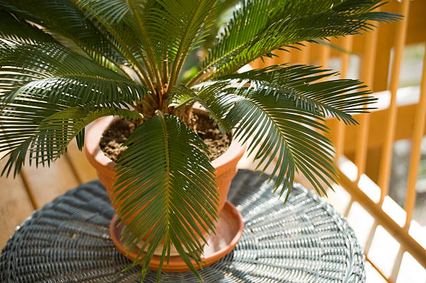

Sago Palm (Cycas revoluta)
Scientific Name: Cycas revoluta
Description: The Sago Palm, or *Cycas revoluta*, is a type of cycad and is known for its tropical appearance with stiff, feather-like fronds that resemble palm leaves. Despite its name, it is not a true palm but rather a member of the ancient Cycadaceae family. It is often grown as an ornamental plant due to its unique look and ability to thrive in various indoor and outdoor environments.
Care Tips:
- Water: Sago Palms are drought-tolerant once established but should be watered deeply when the soil is dry to the touch. Avoid overwatering to prevent root rot.
- Light: Prefers bright, indirect sunlight. While it can tolerate some direct sun, too much can lead to leaf burn. It's ideal for well-lit indoor spaces.
- Temperature: Thrives in warm environments with temperatures between 60°F and 85°F (16°C to 29°C). Protect from frost, as cold temperatures can damage the plant.
- Humidity: Prefers moderate humidity but can adapt to dry indoor conditions. Regular misting can help in very dry environments.
Medicinal Uses:
While Sago Palm is primarily ornamental, some parts of the plant, particularly the seeds, have been used in traditional medicine in various cultures. The seeds of the Sago Palm contain starch and have been historically processed into a flour that was used as food. However, the seeds are toxic if consumed raw and require proper preparation before use. The plant is also used in folk medicine for treating wounds and other skin ailments, although it's essential to note that its medicinal use should be approached with caution due to its toxicity when not processed correctly.